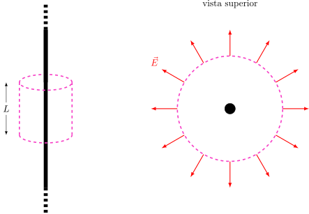

2.4 Simetría Cilíndrica#
¿Recuerdas el cálculo del campo eléctrico de un alambre infinito con densidad de carga \(\lambda\)? Tuvimos que analizar simetrías, usar sustituciones trigonométricas pesadas e integrar desde el infinito. Veamos cómo lo resuelve el maestro Gauss.
Dado que el alambre es infinito, su campo eléctrico debe apuntar radialmente hacia afuera de él en forma de “cepillo cilíndrico”. No puede tener componentes paralelas al alambre, porque el alambre es idéntico hacia arriba y hacia abajo.
Elección de la Superficie Gaussiana#
Esta vez, una esfera no nos sirve porque el campo no es igual en todos los puntos de la esfera. Necesitamos una forma que imite al alambre: un Cilindro Imaginario cerrado (como una lata de bebida) de radio \(r\) y largo \(L\), con el alambre pasando justo por su eje central.
{kind=link}

Simulación 3D: Ley de Gauss para un Alambre Infinito#
Show code cell source
from IPython.display import display, HTML
simulacion_gauss_alambre_html = """
<div style="border: 1px solid #e0e0e0; padding: 20px; border-radius: 8px; background-color: #f8f9fa; font-family: -apple-system, BlinkMacSystemFont, 'Segoe UI', Roboto, Arial, sans-serif;">
<h3 style="margin-top:0; color: #2c3e50;">Simulación 3D: Ley de Gauss para un Alambre Infinito</h3>
<p style="font-size: 0.95em; color: #555; margin-bottom: 15px;">Ajusta el radio <span style="color:#0056b3;">r</span> y el largo <span style="color:#198754;">L</span> del cilindro gaussiano (superficie imaginaria). Observa cómo interactúan los vectores normales <span style="color:#d9534f; font-weight:bold;">n̂</span> con el campo radial <span style="color:#333; font-weight:bold;">E</span>.</p>
<div style="display: flex; gap: 20px; flex-wrap: wrap; margin-bottom: 15px;">
<div style="flex: 1; min-width: 250px;">
<div style="margin-bottom: 8px;">
<label style="font-weight: 600; display: inline-block; width: 170px; color: #0056b3;">Radio del Cilindro (r): <span id="wg_val_r" style="font-weight: normal;">1.5</span></label>
<input type="range" id="wg_slider_r" min="0.5" max="3" step="0.1" value="1.5" style="width: 35%; vertical-align: middle;">
</div>
<div style="margin-bottom: 8px;">
<label style="font-weight: 600; display: inline-block; width: 170px; color: #198754;">Largo del Cilindro (L): <span id="wg_val_L" style="font-weight: normal;">4.0</span></label>
<input type="range" id="wg_slider_L" min="1" max="6" step="0.5" value="4.0" style="width: 35%; vertical-align: middle;">
</div>
<div>
<label style="font-weight: 600; display: inline-block; width: 170px;">Rotar Cámara: <span id="wg_val_cam" style="font-weight: normal;">25°</span></label>
<input type="range" id="wg_slider_cam" min="0" max="360" step="1" value="25" style="width: 35%; vertical-align: middle;">
</div>
</div>
<div style="flex: 1; min-width: 320px; background: white; padding: 15px; border-radius: 8px; box-shadow: 0 1px 3px rgba(0,0,0,0.1); font-size: 0.9em;">
<div style="font-weight: bold; margin-bottom: 8px; border-bottom: 1px solid #ccc; padding-bottom: 5px;">Análisis Gaussiano (λ = 2.0 μC/m)</div>
<div style="display: flex; justify-content: space-between; margin-bottom: 5px;">
<span>Carga Encerrada (q<sub>enc</sub> = λ<span style="color:#198754;">L</span>):</span>
<span id="wg_math_q" style="font-weight: bold; color: #d9534f;">8.0 μC</span>
</div>
<div style="display: flex; justify-content: space-between; margin-bottom: 5px;">
<span>Área del Manto (A = 2π<span style="color:#0056b3;">r</span><span style="color:#198754;">L</span>):</span>
<span id="wg_math_A" style="font-weight: bold; color: #0056b3;">37.7 m²</span>
</div>
<div style="display: flex; justify-content: space-between; font-size: 0.85em; color: #666; margin-top: 10px;">
<span>Φ<sub>Tapas</sub> = 0 (porque <span style="color:#d9534f">n̂</span> ⊥ E)</span>
</div>
<div style="display: flex; justify-content: space-between; font-size: 0.85em; color: #666;">
<span>Φ<sub>Manto</sub> = E · A (porque <span style="color:#d9534f">n̂</span> ∥ E)</span>
</div>
<div style="margin-top: 10px; border-top: 2px solid #eee; padding-top: 8px; background: #f9f9f9; padding: 10px; border-radius: 4px;">
<div style="text-align: center; font-family: monospace; font-size: 1.1em; margin-bottom: 5px;">
E · (<span id="wg_eq_A" style="color:#0056b3">37.7</span>) = (<span id="wg_eq_q" style="color:#d9534f">8.0</span>) / ε₀
</div>
<div style="text-align: center; font-weight: bold; font-size: 1.2em;">
E = <span id="wg_math_E">24.0</span> kN/C
</div>
<div style="text-align: center; font-size: 0.8em; color: #888; margin-top: 4px;" id="wg_msg_cancel">
¡Nota que cambiar L no afecta a E!
</div>
</div>
</div>
</div>
<div style="text-align: center;">
<canvas id="wire_gauss_canvas" width="800" height="420" style="background: white; border: 1px solid #ccc; border-radius: 4px; box-shadow: 0 2px 5px rgba(0,0,0,0.05); max-width: 100%;"></canvas>
</div>
</div>
<script>
(function() {
const canvas = document.getElementById('wire_gauss_canvas');
const ctx = canvas.getContext('2d');
// UI Elements
const slider_r = document.getElementById('wg_slider_r');
const slider_L = document.getElementById('wg_slider_L');
const slider_cam = document.getElementById('wg_slider_cam');
const val_r = document.getElementById('wg_val_r');
const val_L = document.getElementById('wg_val_L');
const val_cam = document.getElementById('wg_val_cam');
const math_q = document.getElementById('wg_math_q');
const math_A = document.getElementById('wg_math_A');
const eq_q = document.getElementById('wg_eq_q');
const eq_A = document.getElementById('wg_eq_A');
const math_E = document.getElementById('wg_math_E');
const msg_cancel = document.getElementById('wg_msg_cancel');
// Configuración 3D
const cx = canvas.width / 2;
const cy = canvas.height / 2;
const scale3D = 35;
const lambda = 2.0; // uC/m
const k_const = 9.0; // Aproximación para visualización kN/C
function drawHatNVectorial(ctx, x, y) {
let labelX = x + 5; let labelY = y - 5;
ctx.lineWidth = 1.5; ctx.lineCap = 'round'; ctx.lineJoin = 'round';
ctx.strokeStyle = ctx.fillStyle;
labelY -= 3;
ctx.beginPath();
let hatWidth = 6; let hatHeight = 3;
let hatTopX = labelX + hatWidth / 2; let hatTopY = labelY - 3;
ctx.moveTo(labelX, labelY); ctx.lineTo(hatTopX, hatTopY); ctx.lineTo(labelX + hatWidth, labelY);
ctx.stroke();
ctx.beginPath();
let nWidth = 7; let nHeight = 8;
let topY = labelY + 2; let bottomY = topY + nHeight;
ctx.moveTo(labelX, bottomY); ctx.lineTo(labelX, topY + 2);
ctx.quadraticCurveTo(labelX + nWidth / 2, topY - 3, labelX + nWidth, topY + 2);
ctx.lineTo(labelX + nWidth, bottomY);
ctx.stroke();
}
function drawArrow(from, to, color, width, label="") {
ctx.beginPath(); ctx.moveTo(from.x, from.y); ctx.lineTo(to.x, to.y);
ctx.strokeStyle = color; ctx.lineWidth = width; ctx.stroke();
let angle = Math.atan2(to.y - from.y, to.x - from.x);
let headlen = 10;
ctx.beginPath();
ctx.moveTo(to.x, to.y);
ctx.lineTo(to.x - headlen * Math.cos(angle - Math.PI/7), to.y - headlen * Math.sin(angle - Math.PI/7));
ctx.lineTo(to.x - headlen * Math.cos(angle + Math.PI/7), to.y - headlen * Math.sin(angle + Math.PI/7));
ctx.lineTo(to.x, to.y);
ctx.fillStyle = color; ctx.fill();
if (label === "n̂") drawHatNVectorial(ctx, to.x, to.y);
else if (label !== "") { ctx.fillStyle = color; ctx.font = 'italic bold 16px Arial'; ctx.fillText(label, to.x + 5, to.y - 5); }
}
function updateSim() {
let r = parseFloat(slider_r.value);
let L = parseFloat(slider_L.value);
let cam_angle = parseFloat(slider_cam.value) * Math.PI / 180;
val_r.innerText = r.toFixed(1); val_L.innerText = L.toFixed(1); val_cam.innerText = slider_cam.value + "°";
// Cálculos físicos
let q_enc = lambda * L;
let Area = 2 * Math.PI * r * L;
let E_field = (2 * k_const * lambda) / r; // E = 2k*lambda / r
math_q.innerText = q_enc.toFixed(1) + " \u03BCC";
math_A.innerText = Area.toFixed(1) + " m\u00B2";
eq_q.innerText = q_enc.toFixed(1);
eq_A.innerText = Area.toFixed(1);
math_E.innerText = E_field.toFixed(1);
// Efecto visual para enfatizar la cancelación
msg_cancel.style.color = '#888';
msg_cancel.style.fontWeight = 'normal';
clearTimeout(window.cancelHighlightTimer);
if(window.last_L !== undefined && window.last_L !== L) {
msg_cancel.style.color = '#d9534f';
msg_cancel.style.fontWeight = 'bold';
window.cancelHighlightTimer = setTimeout(() => {
msg_cancel.style.color = '#888';
msg_cancel.style.fontWeight = 'normal';
}, 800);
}
window.last_L = L;
ctx.clearRect(0, 0, canvas.width, canvas.height);
// Proyección 3D (Eje Y es el vertical)
let tilt = 0.25;
function proj3D(lx, ly, lz) {
let rot_x = lx * Math.cos(cam_angle) - lz * Math.sin(cam_angle);
let rot_z = lx * Math.sin(cam_angle) + lz * Math.cos(cam_angle);
let px = cx + rot_x * scale3D;
let py = cy - ly * scale3D - rot_z * scale3D * Math.sin(tilt);
return {x: px, y: py, z: rot_z};
}
// 1. Dibujar Alambre Infinito (Línea roja gruesa a lo largo del eje Y)
let wire_top = proj3D(0, 5, 0);
let wire_bot = proj3D(0, -5, 0);
ctx.beginPath(); ctx.moveTo(wire_bot.x, wire_bot.y); ctx.lineTo(wire_top.x, wire_top.y);
ctx.strokeStyle = '#dc3545'; ctx.lineWidth = 4; ctx.stroke();
// Puntos para generar el cilindro
let topPts = [], botPts = [];
let segments = 36;
for(let i=0; i<=segments; i++) {
let ang = (i/segments) * 2 * Math.PI;
let px = r * Math.cos(ang);
let pz = r * Math.sin(ang);
topPts.push(proj3D(px, L/2, pz));
botPts.push(proj3D(px, -L/2, pz));
}
// 2. Dibujar Cilindro Gaussiano (Manto trasero)
ctx.fillStyle = 'rgba(0, 123, 255, 0.15)'; // Azul translúcido
ctx.strokeStyle = 'rgba(0, 123, 255, 0.5)';
ctx.lineWidth = 1;
// Rellenar cilindro completo
ctx.beginPath();
ctx.moveTo(topPts[0].x, topPts[0].y);
for(let i=1; i<=segments; i++) ctx.lineTo(topPts[i].x, topPts[i].y);
for(let i=segments; i>=0; i--) ctx.lineTo(botPts[i].x, botPts[i].y);
ctx.closePath();
ctx.fill();
// Bordes (Elipses superior e inferior)
ctx.beginPath();
ctx.moveTo(topPts[0].x, topPts[0].y);
for(let i=1; i<=segments; i++) ctx.lineTo(topPts[i].x, topPts[i].y);
ctx.stroke();
ctx.beginPath();
ctx.moveTo(botPts[0].x, botPts[0].y);
for(let i=1; i<=segments; i++) ctx.lineTo(botPts[i].x, botPts[i].y);
ctx.stroke();
// Líneas laterales del cilindro para dar volumen
ctx.beginPath(); ctx.moveTo(topPts[0].x, topPts[0].y); ctx.lineTo(botPts[0].x, botPts[0].y); ctx.stroke();
let half_idx = Math.floor(segments/2);
ctx.beginPath(); ctx.moveTo(topPts[half_idx].x, topPts[half_idx].y); ctx.lineTo(botPts[half_idx].x, botPts[half_idx].y); ctx.stroke();
// 3. Dibujar Vectores
let norm_len = 1.2;
let E_len = 2.0;
// --- Tapa Superior (n̂ hacia arriba, E hacia afuera) ---
let top_center = proj3D(0, L/2, 0);
let top_n = proj3D(0, L/2 + norm_len, 0);
drawArrow(top_center, top_n, '#d9534f', 3, "n̂"); // Vector Normal
let top_edge = proj3D(r, L/2, 0); // Un punto en el borde superior
let top_E = proj3D(r + E_len, L/2, 0);
drawArrow(top_edge, top_E, 'rgba(0,0,0,0.6)', 2, "E"); // Campo E (perpendicular a n̂)
// --- Tapa Inferior (n̂ hacia abajo) ---
let bot_center = proj3D(0, -L/2, 0);
let bot_n = proj3D(0, -L/2 - norm_len, 0);
drawArrow(bot_center, bot_n, '#d9534f', 3, "n̂");
// --- Manto (n̂ y E paralelos, radiales) ---
// Elegimos un ángulo visible según la cámara para que los vectores se vean claros
// Queremos que apunten hacia la derecha/frente (+X local)
let side_pt = proj3D(r, 0, 0);
let side_n = proj3D(r + norm_len, 0, 0);
let side_E = proj3D(r + E_len, 0, 0); // E es un poco más largo
// Dibujar primero el E y luego el n̂ sobre él
drawArrow(side_pt, side_E, 'rgba(0,0,0,0.6)', 2, "E");
drawArrow(side_pt, side_n, '#d9534f', 3, "n̂");
}
slider_r.addEventListener('input', updateSim);
slider_L.addEventListener('input', updateSim);
slider_cam.addEventListener('input', updateSim);
updateSim();
})();
</script>
"""
display(HTML(simulacion_gauss_alambre_html))
Simulación 3D: Ley de Gauss para un Alambre Infinito
Ajusta el radio r y el largo L del cilindro gaussiano (superficie imaginaria). Observa cómo interactúan los vectores normales n̂ con el campo radial E.
Análisis del Flujo#
Nuestra “lata” gaussiana tiene tres superficies: la tapa superior, la tapa inferior y el manto (el cuerpo cilíndrico).
Las Tapas: El vector área \(d\vec{A}\) de las tapas apunta hacia arriba y hacia abajo (paralelo al alambre). Pero el campo \(\vec{E}\) apunta hacia afuera (perpendicular al alambre). Como forman \(90^\circ\), el flujo por ambas tapas es exactamente cero (\(\cos 90^\circ = 0\)).
El Manto: En la pared curva, el vector área \(d\vec{A}\) apunta radialmente hacia afuera, exactamente en la misma dirección que el campo \(\vec{E}\). Además, toda la pared curva está a la misma distancia \(r\) del alambre, por lo que \(E\) es constante.
Planteamiento Matemático#
El flujo total es la suma de las tres partes, pero las tapas son cero:
Nuevamente, sacamos \(E\) de la integral por ser constante:
El área del manto de un cilindro es el perímetro de la base por la altura: \(2\pi r L\). Además, la carga encerrada dentro de nuestro cilindro de largo \(L\) es simplemente la densidad lineal por el largo (\(q_{\text{enc}} = \lambda L\)). Sustituimos ambas cosas:
Resultado Final#
¡Observa que el largo \(L\) de nuestro cilindro imaginario se cancela a ambos lados de la ecuación! Esto es hermoso, porque demuestra que el resultado final es independiente de la superficie imaginaria que elegimos. Despejando \(E\):
Hemos llegado exactamente a la misma ecuación que obtuvimos con cálculo avanzado, pero esta vez usando un cilindro y un par de multiplicaciones. ¡Ese es el verdadero poder predictivo del electromagnetismo!
Show code cell source
# import numpy as np
# import plotly.graph_objects as go
# from plotly.subplots import make_subplots
# def generar_gauss_alambre_3d():
# fig = make_subplots(
# rows=1, cols=3,
# specs=[[{'type': 'scene'}, {'type': 'scene'}, {'type': 'scene'}]],
# subplot_titles=("A) Superficie Cilíndrica (Ideal)", "B) Superficie Esférica", "C) Paralelepípedo")
# )
# H_alambre = 6.0
# R_gauss = 1.5
# L_flecha_E = 1.0
# L_flecha_dA = 0.7
# color_E = 'red'
# color_dA = 'blue'
# color_S = 'lightblue'
# def add_vector_3d(fig, row, col, start, direction, color, width, label=""):
# fig.add_trace(go.Scatter3d(
# x=[start[0], start[0] + direction[0]],
# y=[start[1], start[1] + direction[1]],
# z=[start[2], start[2] + direction[2]],
# mode='lines', line=dict(color=color, width=width), showlegend=False, hoverinfo='skip'
# ), row=row, col=col)
# fig.add_trace(go.Cone(
# x=[start[0] + direction[0]], y=[start[1] + direction[1]], z=[start[2] + direction[2]],
# u=[direction[0]], v=[direction[1]], w=[direction[2]],
# sizemode='absolute', sizeref=0.25 if width > 4 else 0.2, anchor='tail',
# colorscale=[[0, color], [1, color]], showscale=False, hoverinfo='skip'
# ), row=row, col=col)
# def add_alambre(fig, row, col, mostrar_leyenda=False):
# fig.add_trace(go.Scatter3d(
# x=[0, 0], y=[0, 0], z=[-H_alambre/2, H_alambre/2],
# mode='lines+markers', line=dict(color='black', width=6),
# marker=dict(size=4, color='black'), name='Alambre (λ)', hoverinfo='skip',
# showlegend=mostrar_leyenda
# ), row=row, col=col)
# # ==========================================
# # CASO A: CILINDRO
# # ==========================================
# add_alambre(fig, 1, 1, mostrar_leyenda=True)
# z_mesh = np.linspace(-H_alambre/3, H_alambre/3, 20)
# theta_mesh = np.linspace(0, 2*np.pi, 30)
# Theta, Z = np.meshgrid(theta_mesh, z_mesh)
# X = R_gauss * np.cos(Theta)
# Y = R_gauss * np.sin(Theta)
# fig.add_trace(go.Surface(
# x=X, y=Y, z=Z, opacity=0.3, colorscale=[[0, color_S], [1, color_S]], showscale=False, hoverinfo='skip'
# ), row=1, col=1)
# puntos_cilindro = [(np.pi/4, 0), (3*np.pi/4, 0), (np.pi, H_alambre/6), (3*np.pi/2, -H_alambre/6)]
# for angle, z_pos in puntos_cilindro:
# px = R_gauss * np.cos(angle)
# py = R_gauss * np.sin(angle)
# pz = z_pos
# dir_E = np.array([np.cos(angle), np.sin(angle), 0])
# add_vector_3d(fig, 1, 1, [px, py, pz], dir_E * L_flecha_E, color_E, 5)
# add_vector_3d(fig, 1, 1, [px+0.1, py+0.1, pz], dir_E * L_flecha_dA, color_dA, 4)
# # ==========================================
# # CASO B: ESFERA
# # ==========================================
# add_alambre(fig, 1, 2, mostrar_leyenda=False)
# u = np.linspace(0, 2 * np.pi, 30)
# v = np.linspace(0, np.pi, 20)
# X_sph = R_gauss * np.outer(np.cos(u), np.sin(v))
# Y_sph = R_gauss * np.outer(np.sin(u), np.sin(v))
# Z_sph = R_gauss * np.outer(np.ones(np.size(u)), np.cos(v))
# fig.add_trace(go.Surface(
# x=X_sph, y=Y_sph, z=Z_sph, opacity=0.2, colorscale=[[0, color_S], [1, color_S]], showscale=False, hoverinfo='skip'
# ), row=1, col=2)
# puntos_esfera = [(np.pi/4, np.pi/4), (np.pi, np.pi/4), (3*np.pi/2, 3*np.pi/4), (0, 3*np.pi/4)]
# for phi, theta in puntos_esfera:
# px = R_gauss * np.cos(phi) * np.sin(theta)
# py = R_gauss * np.sin(phi) * np.sin(theta)
# pz = R_gauss * np.cos(theta)
# r_dist = np.sqrt(px**2 + py**2)
# dir_E = np.array([px/r_dist, py/r_dist, 0])
# add_vector_3d(fig, 1, 2, [px, py, pz], dir_E * L_flecha_E, color_E, 5)
# dir_dA = np.array([px, py, pz]) / R_gauss
# add_vector_3d(fig, 1, 2, [px+0.1, py+0.1, pz], dir_dA * L_flecha_dA, color_dA, 4)
# # ==========================================
# # CASO C: PARALELEPÍPEDO
# # ==========================================
# add_alambre(fig, 1, 3, mostrar_leyenda=False)
# W, D, H = 1.5, 1.5, 2.0
# x_p = [-W, W, W, -W, -W, W, W, -W]
# y_p = [-D, -D, D, D, -D, -D, D, D]
# z_p = [-H, -H, -H, -H, H, H, H, H]
# i_p = [7, 0, 0, 0, 4, 4, 6, 6, 4, 0, 3, 2]
# j_p = [3, 4, 1, 2, 5, 6, 5, 2, 0, 1, 6, 3]
# k_p = [0, 7, 2, 3, 6, 7, 1, 1, 5, 5, 7, 6]
# fig.add_trace(go.Mesh3d(
# x=x_p, y=y_p, z=z_p, i=i_p, j=j_p, k=k_p, opacity=0.2, color=color_S, hoverinfo='skip'
# ), row=1, col=3)
# puntos_para = [
# (W, 0, 0),
# (W, D/1.3, 0),
# (W, -D/1.3, 0)
# ]
# for px, py, pz in puntos_para:
# r_dist = np.sqrt(px**2 + py**2)
# dir_E = np.array([px/r_dist, py/r_dist, 0])
# add_vector_3d(fig, 1, 3, [px, py, pz], dir_E * L_flecha_E, color_E, 5)
# dir_dA = np.array([1, 0, 0])
# add_vector_3d(fig, 1, 3, [px, py, pz+0.2], dir_dA * L_flecha_dA, color_dA, 4)
# # ==========================================
# # ESTILOS GLOBALES Y LEYENDA
# # ==========================================
# fig.add_trace(go.Scatter3d(x=[None], y=[None], z=[None], mode='lines', line=dict(color=color_E, width=5), name='Campo E (Radial desde el alambre)'))
# fig.add_trace(go.Scatter3d(x=[None], y=[None], z=[None], mode='lines', line=dict(color=color_dA, width=4), name='Normal dA (Hacia afuera)'))
# camera_settings = dict(eye=dict(x=1.3, y=1.3, z=1.0))
# axis_settings = dict(visible=False, range=[-3.5, 3.5])
# scene_config = dict(xaxis=axis_settings, yaxis=axis_settings, zaxis=axis_settings, camera=camera_settings, aspectmode='cube')
# fig.update_layout(
# title=dict(
# text="Ley de Gauss: Alambre Infinito y Elección de Superficie<br><sup>Nota cómo en el Cilindro (A), E y dA son paralelos en la cara curva, facilitando la integral.</sup>",
# x=0.5, y=0.97, font=dict(size=18)
# ),
# scene=scene_config, scene2=scene_config, scene3=scene_config,
# margin=dict(l=0, r=0, b=0, t=80),
# legend=dict(x=0.5, y=0.05, xanchor='center', orientation="h", bgcolor='rgba(255, 255, 255, 0.8)')
# )
# fig.show()
# fig.write_html("gauss_alambre_3d.html", include_plotlyjs='cdn')
# print("¡Listo! Archivo 'gauss_alambre_3d.html' guardado con éxito.")
# generar_gauss_alambre_3d()
Visualización 3D: ¿Por qué un cilindro?#
Puedes rotar libremente las figuras arrastrando con el ratón. Nota cómo en la esfera y en el paralelepípedo, los vectores rojos y azules se separan angularmente, haciendo que el producto punto \(\vec{E} \cdot d\vec{A}\) sea variable.
Preguntas de Análisis#
Show code cell source
from IPython.display import display, HTML
quiz_cilindro_html = """
<style>
.fisi-quiz-container {
border: 1px solid #e0e0e0;
padding: 15px;
margin-bottom: 25px;
border-radius: 8px;
background-color: #f8f9fa;
font-family: -apple-system, BlinkMacSystemFont, "Segoe UI", Roboto, Arial, sans-serif;
}
.fisi-question {
font-weight: 600;
margin-bottom: 15px;
color: #2c3e50;
}
.fisi-option {
margin-bottom: 10px;
display: flex;
align-items: flex-start;
cursor: pointer;
}
.fisi-option input {
margin-top: 4px;
margin-right: 10px;
}
.fisi-check-btn {
background-color: #f73bc5;
color: white;
border: none;
padding: 8px 20px;
border-radius: 4px;
cursor: pointer;
font-size: 14px;
margin-top: 10px;
font-weight: 500;
}
.fisi-check-btn:hover { background-color: #ab2988; }
.fisi-feedback {
margin-top: 15px;
padding: 12px;
border-radius: 6px;
display: none;
font-size: 0.95em;
}
</style>
<script>
if (typeof window.checkFisiQuiz === 'undefined') {
window.checkFisiQuiz = function(radioName, feedbackId) {
var radios = document.getElementsByName(radioName);
var selected = null;
var feedbackDiv = document.getElementById(feedbackId);
for (var i = 0; i < radios.length; i++) {
if (radios[i].checked) {
selected = radios[i];
break;
}
}
feedbackDiv.style.display = 'block';
if (!selected) {
feedbackDiv.style.backgroundColor = '#fff3cd';
feedbackDiv.style.color = '#856404';
feedbackDiv.style.border = '1px solid #ffeeba';
feedbackDiv.innerHTML = '⚠️ Por favor, selecciona una opción.';
return;
}
var isCorrect = selected.getAttribute('data-correct') === 'true';
var msg = selected.getAttribute('data-fb');
if (isCorrect) {
feedbackDiv.style.backgroundColor = '#d4edda';
feedbackDiv.style.color = '#155724';
feedbackDiv.style.border = '1px solid #c3e6cb';
feedbackDiv.innerHTML = '✅ <strong>¡Correcto!</strong><br>' + msg;
} else {
feedbackDiv.style.backgroundColor = '#f8d7da';
feedbackDiv.style.color = '#721c24';
feedbackDiv.style.border = '1px solid #f5c6cb';
feedbackDiv.innerHTML = '❌ <strong>Incorrecto.</strong><br>' + msg;
}
};
}
</script>
<div class="fisi-quiz-container">
<div class="fisi-question">
1. Para analizar el campo eléctrico de un alambre infinito, se elige un cilindro imaginario en lugar de una esfera. Según el texto, ¿cuál es la razón principal de esta elección?
</div>
<label class="fisi-option">
<input type="radio" name="qcilindro1" value="a" data-fb="Incorrecto. Una esfera sí puede contener parte del alambre, pero el problema es que el campo eléctrico no se comportaría de forma simétrica sobre la superficie de la esfera (variaría en magnitud y ángulo).">
<span>Porque es imposible encerrar una línea recta infinita dentro de una esfera imaginaria.</span>
</label>
<label class="fisi-option">
<input type="radio" name="qcilindro1" value="b" data-correct="true" data-fb="¡Exacto! El cilindro se adapta a la geometría del problema. Al usar la pared curva (manto) de un cilindro coaxial, nos aseguramos de que todos sus puntos estén a la misma distancia radial del alambre, garantizando que la magnitud de E sea constante.">
<span>Porque la forma cilíndrica imita la geometría del alambre, permitiendo que en toda la pared curva (manto) el campo eléctrico sea constante en magnitud y paralelo al vector área.</span>
</label>
<label class="fisi-option">
<input type="radio" name="qcilindro1" value="c" data-fb="Incorrecto. El campo del alambre es en forma de 'cepillo cilíndrico' radial. No se alinea con las tapas, al contrario, es paralelo a las tapas, lo que hace que su flujo por ellas sea cero.">
<span>Porque el campo eléctrico del alambre fluye únicamente hacia arriba y hacia abajo, alineándose perfectamente con las tapas del cilindro.</span>
</label>
<button class="fisi-check-btn" onclick="checkFisiQuiz('qcilindro1', 'feedback-cilindro1')">Comprobar</button>
<div class="fisi-feedback" id="feedback-cilindro1"></div>
</div>
<div class="fisi-quiz-container">
<div class="fisi-question">
2. Al calcular el flujo eléctrico total a través del cilindro gaussiano, dividimos la superficie en tres partes: la tapa superior, la tapa inferior y el manto. ¿Por qué el flujo a través de las tapas superior e inferior es exactamente cero?
</div>
<label class="fisi-option">
<input type="radio" name="qcilindro2" value="a" data-correct="true" data-fb="¡Muy bien! El vector área de las tapas apunta hacia arriba/abajo, mientras que el campo eléctrico del alambre sale radialmente hacia los lados. Al formar un ángulo de 90° entre ellos, el producto punto es cero (cos 90° = 0).">
<span>Porque el vector área de las tapas es perpendicular al campo eléctrico radial, formando un ángulo de 90° que anula el producto punto.</span>
</label>
<label class="fisi-option">
<input type="radio" name="qcilindro2" value="b" data-fb="Incorrecto. El campo eléctrico sí existe en el espacio donde están las tapas, lo que ocurre es que las líneas de campo 'resbalan' paralelamente a la superficie de las tapas sin atravesarlas.">
<span>Porque el campo eléctrico de un alambre infinito no llega hasta los extremos donde están ubicadas las tapas.</span>
</label>
<label class="fisi-option">
<input type="radio" name="qcilindro2" value="c" data-fb="Incorrecto. La carga encerrada (q_enc = λL) genera un flujo total no nulo, el cual sale enteramente por el manto cilíndrico, no se cancela ni es nula.">
<span>Porque la carga encerrada por el cilindro es cero, lo que automáticamente hace que el flujo en las tapas se cancele.</span>
</label>
<button class="fisi-check-btn" onclick="checkFisiQuiz('qcilindro2', 'feedback-cilindro2')">Comprobar</button>
<div class="fisi-feedback" id="feedback-cilindro2"></div>
</div>
<div class="fisi-quiz-container">
<div class="fisi-question">
3. En el último paso del desarrollo matemático, el largo imaginario del cilindro (L) se cancela algebraicamente a ambos lados de la ecuación. ¿Qué significado físico tiene este hecho?
</div>
<label class="fisi-option">
<input type="radio" name="qcilindro3" value="a" data-fb="Incorrecto. El alambre sí importa (su densidad de carga λ queda en la ecuación). Lo que se cancela es la longitud de la superficie imaginaria que nosotros inventamos.">
<span>Demuestra que la longitud del alambre físico no influye en la magnitud del campo eléctrico en ningún caso.</span>
</label>
<label class="fisi-option">
<input type="radio" name="qcilindro3" value="b" data-fb="Incorrecto. El campo no es uniforme en todo el espacio; decae a medida que nos alejamos del alambre (es inversamente proporcional a la distancia r).">
<span>Significa que el campo eléctrico es uniforme y constante en todo el espacio, sin importar la distancia radial.</span>
</label>
<label class="fisi-option">
<input type="radio" name="qcilindro3" value="c" data-correct="true" data-fb="¡Excelente! El largo L era un parámetro arbitrario de nuestra construcción mental (el cilindro gaussiano). Que se cancele demuestra que el valor físico real del campo eléctrico no depende del tamaño de la 'herramienta' matemática que usamos para medirlo.">
<span>Demuestra que el valor real del campo eléctrico es independiente de la superficie imaginaria (y su tamaño arbitrario) que nosotros elegimos para hacer el cálculo matemático.</span>
</label>
<button class="fisi-check-btn" onclick="checkFisiQuiz('qcilindro3', 'feedback-cilindro3')">Comprobar</button>
<div class="fisi-feedback" id="feedback-cilindro3"></div>
</div>
"""
display(HTML(quiz_cilindro_html))